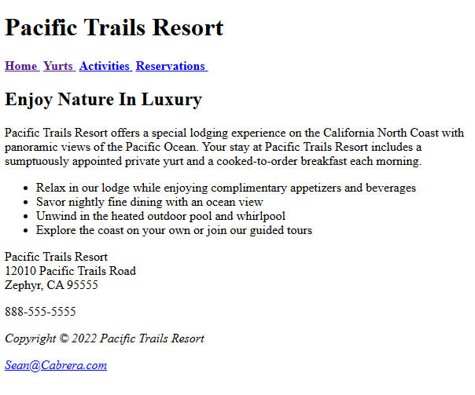
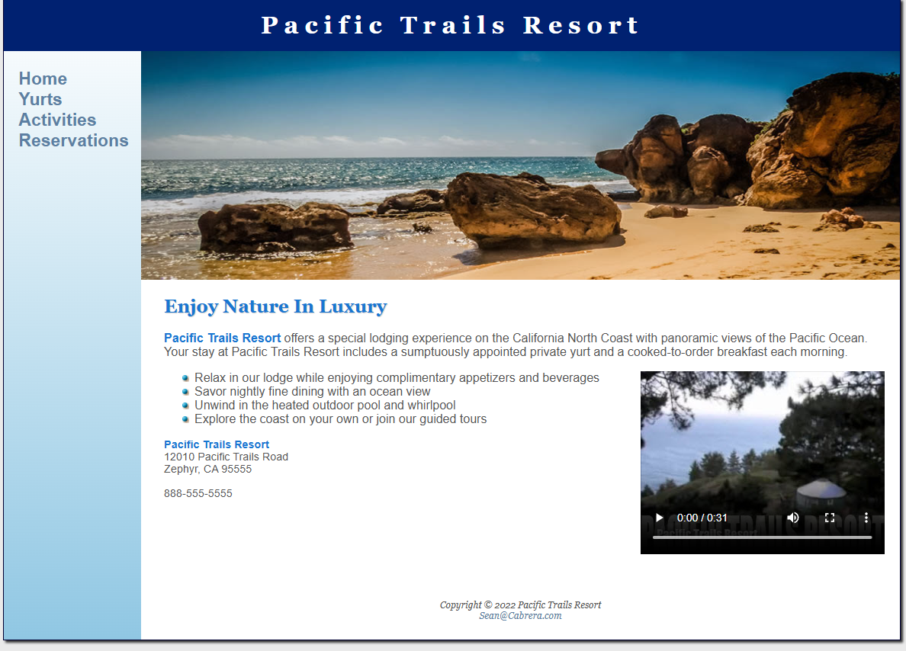

Project 1: Pacific Trails Resort
- A simple web application for a fake company known as "Pacific Trails Resort" built with HTML, CSS, and JavaScript.
- I started with a basic HTML structure and gradually added styling and interactivity as I learned more about web development.
- This project was a great learning experience and allowed me to create a functional and visually appealing website.
- This project began as a simple design while I was learning HTML and CSS during a class at Arizona State University.
- As I learned more about web development, I added more features and improved the design to make it more user-friendly and visually appealing. This ended as a successful project that showcased my skills and knowledge.




Project 2: Portfolio Website
- This personal portfolio website built with HTML, CSS, and JavaScript.
- It started out very basic as I am still learning the intricacies of HTML and CSS fundamentals and will be improved over time.
- I started this project as a way to showcase my skills and experience as a web developer, and to provide a platform for potential employers or clients to learn more about me and my work.
- The layout was designed to be responsive and user-friendly, ensuring a good experience across different devices, however, it is still a work in progress. I want to make this layout more polished and modern over time.
- these pictures of the contact pages and home pages were pictures of the only completed pages at the time as the about me, projects, and skills pages were blank at the time.